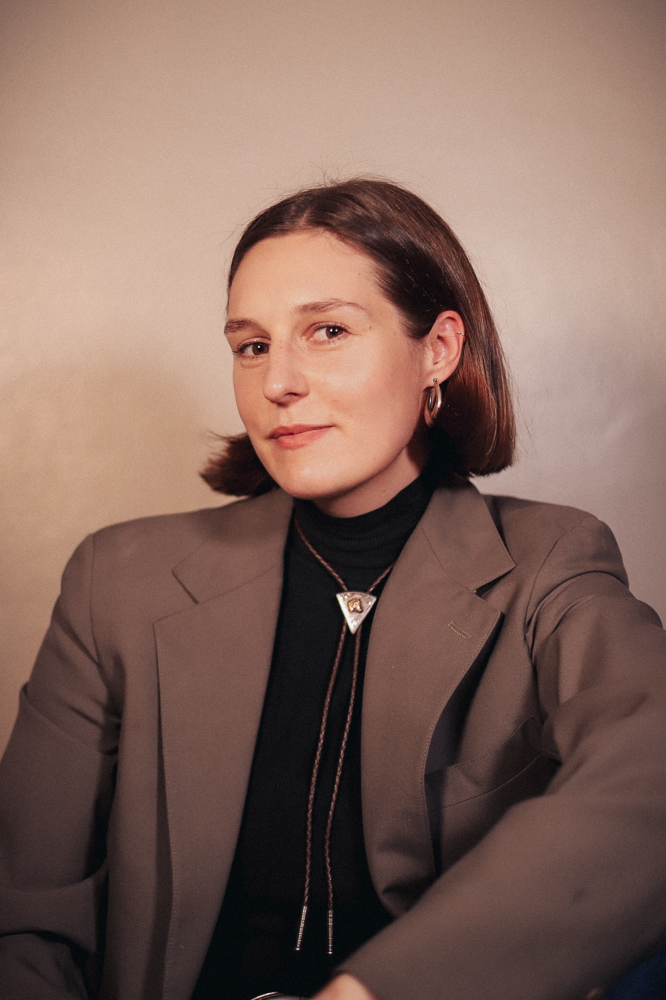

Node 001
↗
// VISIBLE The Trades Show
A conversation series with modern artisans, filmed inside their workshops. Highlighting
VideoLong-formOn Location
Reviving the artisan trades by building the media, infrastructure, & markets that make craft a valued, visible, and viable, force in the modern economy.
Artisanship is a media & infrastructure company built to revive the artisan trades. 59% of the heritage crafts are endangered according to the UK's Red List. And over 97% of cobbler shops are extinct compared to 100 years ago. When the artisan trades disappear, we lose generational and embodied wisdom that can no longer be passed down to the next generation.
Artisanship builds the bridge for the next generation of craftworkers by making the artisan trades visible, valued, and viable.
A conversation series with modern artisans, filmed inside their workshops. Highlighting
The only jobs board designed for artisans, connecting craftspeople with opportunity and brands with artisan talent.
An independent editorial publication translating craftsmanship into print. Every issue goes deep on a single trade, building the book of craft.

// Founder · PortraitBriana Ottoboni is a San Francisco-based founder and creative. After years building brands and working with tech startups, she built Artisanship as the answer to an intrusive thought: what happens when we lose the current generation of craftworkers?
She's building Artisanship as an ecosystem purpose-built for this mission. It's a media company because stories scale. It's an infrastructure company because stories alone aren't enough. The work is in bridging the diminishing supply of artisans with the booming demand for handmade, human-made goods — and to make that connection durable enough to last a generation.
Artisanship is built with the same level of craftsmanship you'd find in the artisan trades. Designed with handmade fonts for every venture (the Artisanship logo was blockprinted by Briana), human connection, and hands-on heart work.
| Primary Focus | Craft + Technology + Humanity |